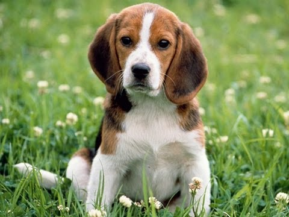

Семейство кошачьих

Пума – это хищное животное из семейства Кошачьих. Искусный и ловкий охотник, один из самых ярких и грациозных представителей больших кошек. В этой статье можно посмотреть описание и фото пумы, узнать много нового и интересного о жизни этой прекрасной дикой кошки.
Тело у пумы гибкое и удлинённое, лапы невысокие, голова сравнительно небольшая. Задние лапы заметно массивнее передних. Хвост длинный, мускулистый, равномерно опушённый. Лапы широкие, с острыми, кривыми втяжными когтями; на задних лапах по 4 пальца, на передних — по 5. Втяжные когти используются для захвата и удержания добычи, а также для лазания по деревьям. Подушечки пальцев овальные, на подушечке пятки три отчётливых доли — общая черта для всех кошек.
Слоны поистине выглядят гигантами среди других животных. Высота слона составляет 2-4 м, при весе от 3 до 7 тонн. При этом слоны, живущие в Африке более крупные, нежели слоны Азии, некоторые особенно крупные африканские саванные слоны могут весить и все 10-12 тонн. Тело слона могучее, оно покрыто толстой кожей бурого или серого цвета с глубокими морщинами. Толщина кожи слона составляет в среднем 2,5 см, недаром она тоже стала одним из нарицательных символов этого существа, «толстокожий как слон» говорят, порой характеризируя человека, которого сложно задеть или обидеть. Также слоны, в отличие от их ближайших родственников мамонтов (к сожалению вымерших) практически не имеют растительности на теле.